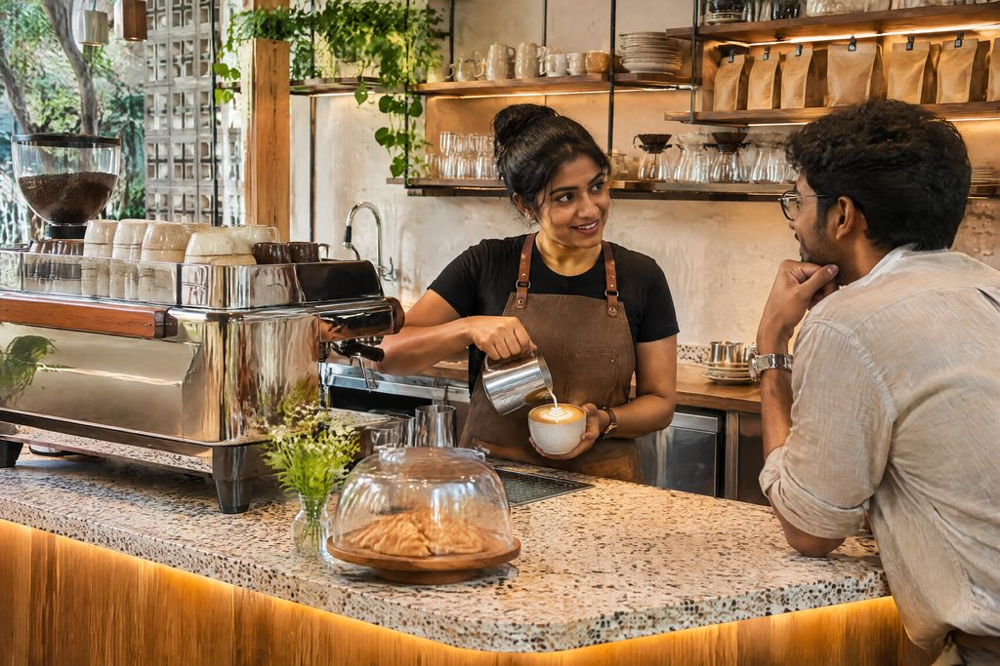
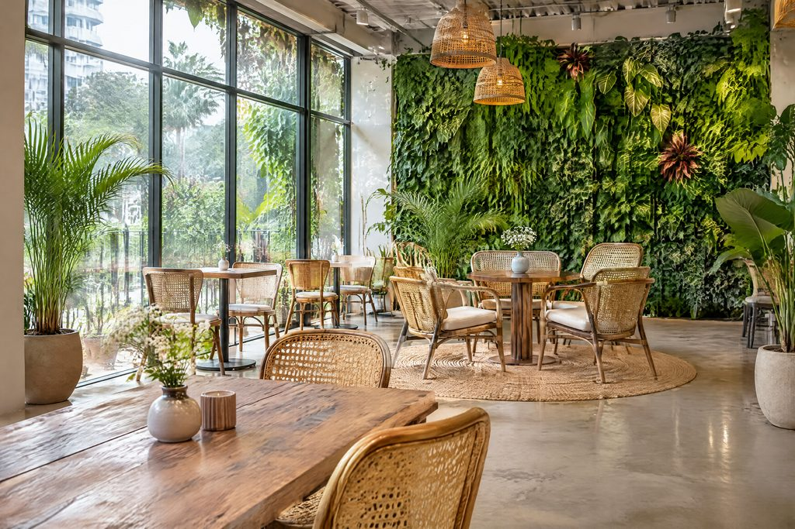
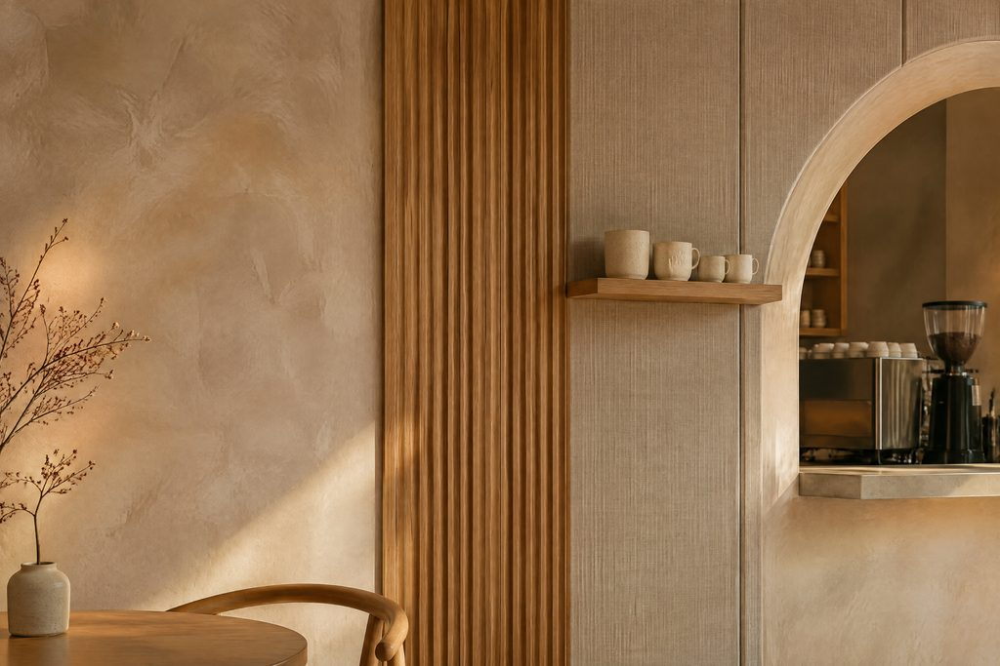
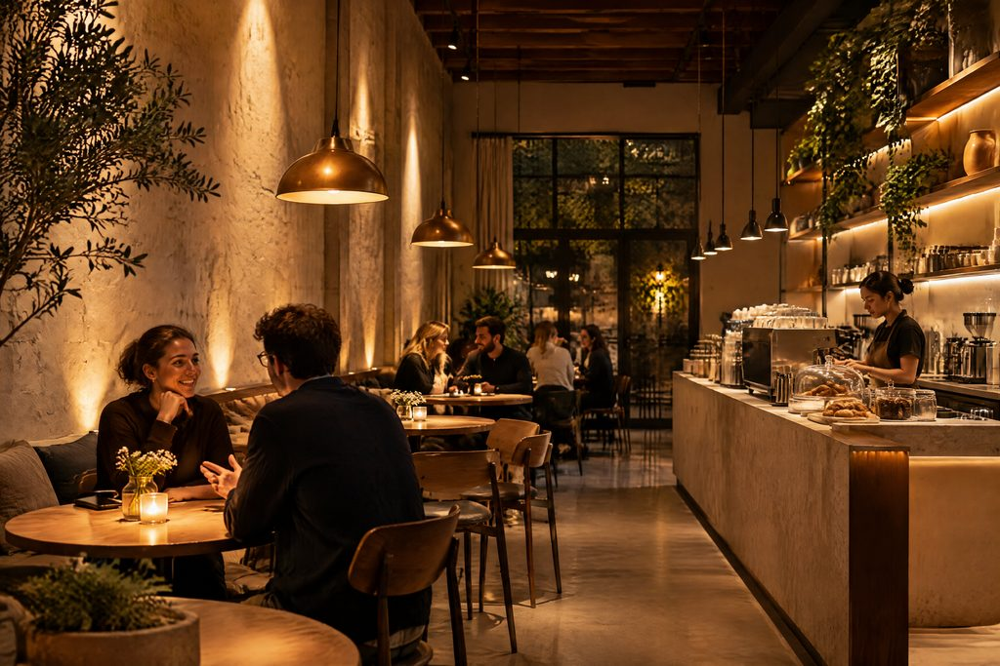
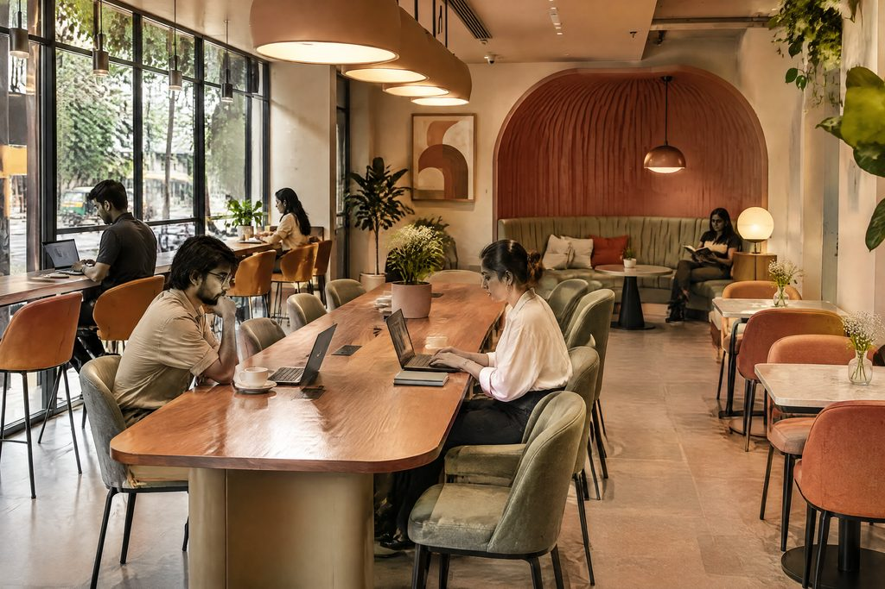

Indian coffee shops now do five jobs before lunch. They are a ten-minute espresso stop, an office for the laptop crowd, a meeting room, a first-date spot and a photo backdrop, often all in the same 800 sq ft. That is why the coffee shop design trends that matter in 2026 are less about a single look and more about how a café performs from the 8 am rush to the 9 pm wind-down.
Across the specialty coffee and café projects we design and build in Bengaluru, Hyderabad, Delhi NCR and Mumbai, owners are asking for the same things: warmth instead of sterile minimalism, materials that survive daily F&B use, seating that suits more than one kind of guest, and lighting that changes with the day. Here are the 12 trends shaping café interior design in India this year, with what to adopt, what to skip and how to make each one work in a real floor plan.
Key takeaways
- 2026 café design is about performance as much as looks: lighting, acoustics, power and workflow decide whether guests come back.
- Warm industrial, textured walls and earthy palettes are replacing raw concrete, vinyl graphics and cool white light.
- The open espresso bar is the new focal point, so the counter has to be planned for both theatre and speed.
- Zoned seating (quick stools, community tables, laptop corners, lounge seats) lifts dwell time and spend without crowding the floor.
- Plan power, Wi-Fi, storage and cable routes at layout stage. Retrofitting them later costs more and looks worse.
Why 2026 Is a Turning Point for Café Interior Design in India
Three shifts in how people use cafés are driving almost every trend on this list.
- Hybrid use is permanent. Quick coffee runs, two-hour laptop sessions, client meetings and content creation now share the same room. A layout built for one of these frustrates the others.
- Comfort decides repeat visits. Good acoustics, fresh air, a supportive chair, a reachable plug point and reliable Wi-Fi are no longer extras. Guests notice when they are missing.
- Authentic beats generic. With a specialty café on every second street in Indiranagar, Jubilee Hills or Hauz Khas, guests choose places with a clear identity. The goal is “memorable”, not “trendy”.
So the trends below are not one visual style. Together, they show where good-looking design and day-to-day running of a café are coming together.

The 12 Coffee Shop Design Trends for 2026
1. Warm industrial replaces cold, raw spaces
Industrial café design has grown up. Exposed brick and concrete are still here, but they are now paired with warm timber, upholstered seating and soft filament-style LEDs, so the room feels honest without feeling unfinished.
- Exposed brick or sealed concrete balanced with oak, teak or walnut tones
- Black steel frames softened by leather or fabric banquettes
- Warm LED filaments in place of power-hungry Edison bulbs
- Industrial details used as accents, not across every surface
Skip: rooms so raw they look unfinished, too much bare metal (it bounces sound), and cold lighting that makes guests leave early.
2. The open espresso bar becomes the hero
Guests want to watch their coffee being made, and specialty brands want to show off the craft. The counter is now the café’s main design moment, not just a place to pay.
- Customer-facing espresso machines and brew bars at a comfortable sightline
- Counter depth and height that allow conversation during preparation
- Materials that signal positioning: marble or terrazzo for premium, timber for artisanal, metal for industrial
- Integrated lighting that shows off both product and process
- A back bar that is visible but stays tidy, with concealed storage behind it
Transparency only works if the design supports discipline. If the workflow is messy, an open bar puts the mess on display.
That is why we plan the barista workflow (grinder, machine, milk, pickup, waste) before choosing a single finish. You can see this approach in the open brew bar at Blue Tokai, Mumbai and the barista-friendly coffee bar at Tuskin Coffee.
3. Biophilic design that is easy to maintain
Biophilic café design is maturing. Instead of crowding every shelf with pots, 2026 cafés use greenery, natural materials and daylight with a plan.
- Living walls with automated irrigation, so they survive a busy operations team
- Planters placed clear of service routes and sightlines
- Natural materials such as rattan, cane, jute and reclaimed wood
- Large glazing that brings in daylight and gives street visibility
- Indoor-outdoor edges where the climate and the lease allow

Skip: high-maintenance plant arrangements, greenery that blocks the view of the counter, and literal “jungle themes”.
4. Curves with a purpose
Curves are still popular, but they now have a job to do. In compact cafés, a rounded counter end or an arched pass-through softens the room and makes movement easier.
- Curved counter ends that remove collision points on busy routes
- Rounded corner banquettes that create intimate zones
- Arches that mark the shift from counter to seating
- Curved booth backs that also add acoustic separation
Skip: curves added for drama that waste floor area or make furniture hard to fit.
5. Texture and materials tell the brand story
Feature walls are not going anywhere, but the 2026 version relies on material and texture rather than printed graphics. Texture ages well, photographs well and does not peel.
- Limewash or Venetian plaster finishes
- Cleaned and sealed exposed brick
- Fluted panels in timber or composite
- Fabric-wrapped acoustic panels that double as decor
- Quiet geometric tile patterns instead of loud murals

Materials also set your positioning before a guest reads the menu: marble, brass, walnut and leather read premium; reclaimed wood and handmade tile read artisanal; clean lines and a tight palette read contemporary. For more on choosing the right wall for each zone, read Sona Mantri’s piece on restaurant wall design as brand communication.
Skip: vinyl graphics, murals that fight the brand, and chalkboard walls nobody updates.
6. Layered lighting, planned from morning to night
Lighting is the clearest sign of a professionally designed café. In 2026, serious concepts plan four layers and control them by time of day.
| Lighting layer | What it does in a café |
|---|---|
| Ambient | Base light from recessed, track or pendant systems |
| Task | Barista stations, counter work surfaces and menu boards |
| Accent | Wall washers, shelf lighting and feature highlights |
| Mood | Dimmable circuits and warm strips for the evening shift |

We design café lighting around service, not just mood: bright and clear for the morning rush, glare-free for afternoon laptop users, and warm and dim for evening conversation. A warm colour temperature (around 2700K to 3000K) keeps food and faces looking good.
Skip: a single grid of overhead lights, cool white LEDs everywhere, and beautiful fixtures that do not actually light the table.
7. Seating zones for every kind of guest
Not every guest needs the same chair. The best café layouts of 2026 mix seating types so the room works for the solo worker, the pair on a date and the group of six.
- Bar and counter stools for quick visits of 15 to 20 minutes
- Community tables for social laptop users
- Two-tops for conversations and meetings
- Lounge seating for longer, slower stays
- Window counters for solo work with a view

The mix you choose shapes dwell time, spend per head and how full the room feels at different hours. For extended stays, chairs need proper back support, tables need room for a laptop, a cup and a phone, and every long-stay seat needs a plug within reach.
Skip: deliberately uncomfortable chairs to force turnover (it usually backfires in Indian metros), stools without footrests, and tables too small to work on.
8. Acoustic comfort and quiet work corners
An echoing café drives people out faster than slow service. In 2026, acoustic planning is part of the design brief, not an afterthought.
- Quiet zones placed away from the entrance, grinder and pickup point
- Acoustic panels disguised as wall features or ceiling rafts
- Soft, absorbent materials balancing hard floors and glass
- Zoned music systems, so the counter can be lively while the work corner stays calm
- Booths that offer a little acoustic privacy
9. Invisible technology: power, Wi-Fi and cables
Good café technology is felt, not seen. With laptop users now a core audience in Bengaluru, Hyderabad and Gurugram, power and connectivity are design decisions.
- Power and USB points built into tables, banquettes and window counters
- Commercial-grade Wi-Fi with properly placed access points
- Floor boxes for power in open-plan areas
- Conduits planned before the floor and ceiling close
- Routers, POS cabling and CCTV concealed but ventilated
- Spare capacity for the equipment you will add in year two
Skip: extension cords along walls, surface conduits and charging stations added as an afterthought.
10. A grounded, earthy colour palette
Café colour schemes in 2026 are calmer and more closely tied to the brand.
- A neutral base of warm whites, beiges and soft greys on large surfaces
- Earth-tone accents: terracotta, ochre, sage and clay
- Brand colours used deliberately, in a few strong moments
- Colour that comes from materials (wood, stone, aged metal) rather than paint alone
A practical rule: keep permanent surfaces neutral and put bolder colour into things you can change, such as upholstery, artwork and planters. Your café can then be refreshed without a renovation. If you are working with a small floor plate, our guide to colour choices that make a café look bigger goes deeper.
11. Space-smart planning: furniture, storage and ceilings
With commercial rents rising across Indian metros, every square foot has to earn its place. Space optimisation is where good café design quietly pays for itself.
- Furniture: modular tables that join for groups, benches with storage, stackable chairs for events and counter-height seating that uses narrow zones
- Storage: concealed back-bar storage, backup stock near retail displays, hidden cleaning supplies and separate staff lockers
- Ceilings: exposed services painted in one colour, slim bulkheads only where needed, integrated acoustic treatment and track lighting you can re-aim
Skip: oversized sofas that cut capacity, heavy dropped ceilings that steal height, and layouts with nowhere to put the milk crates.
12. Durable, sustainable specifications
Sustainability in café interiors now means durability and running cost, not just where a material came from. A finish that has to be replaced in 18 months is not sustainable, however “eco” its label.
- Commercial-grade materials that do not need frequent replacement
- Energy-efficient lighting and equipment
- Water-efficient fixtures
- Locally sourced materials where they perform well
- Finishes that clean easily without harsh chemicals
This is also where build method matters. SprintCo’s FlatPack modular builds take 50% less time than a traditional build, because joinery is made off-site while the site is being prepared. That means fewer weeks of rent on an empty shell. See how traditional and modern construction compare.
What’s Fading in Café Design in 2026
- High-gloss finishes that show every fingerprint
- Cool white lighting across the whole room
- Busy graphics and slogan walls that compete with the brand
- Too few plug points for laptop users
- Over-designed ceilings that make the room feel low
- Furniture that blocks the service route
- Visible clutter caused by too little storage
- The generic “Instagram café” that could be anywhere
A Space-by-Space Checklist for Your 2026 Café
Use this when you review your layout with your designer.
- Entry and queue: clear sightline to the counter from the door, menu visible before guests commit to the queue, a queue that does not block the entrance, and a clear brand signal in the first few steps.
- Service counter: efficient barista workflow, a defined ordering and pickup zone, equipment that looks as good as it performs, and lighting for both work and display.
- Seating zones: a mix of seat types, clear walkways between tables, power and lighting matched to each zone, and acoustic thought in materials and placement.
- Restrooms: finishes that match the main room, good ventilation and light, easy-clean surfaces, and practical touches like hooks and a shelf. Guests judge the whole café by them.
Opening your first café? Our step-by-step guide on how to design a café interior walks through layout, counter, seating and branding in order. And if budget is the next question, read our café interior design cost per sq ft guide or try the restaurant interior cost calculator.
How These Trends Play Out in Bengaluru, Hyderabad, Delhi NCR and Mumbai
The same trend looks different in each city, because the guests, the climate and the rents are different.
- Bengaluru: laptop-heavy daytime crowds in Koramangala, Indiranagar and HSR Layout make power, Wi-Fi and acoustic work corners essential. The city’s mild climate also makes indoor-outdoor edges realistic. See our work with restaurant and café interior designers in Bengaluru.
- Hyderabad: in Jubilee Hills, Banjara Hills and the HITEC City belt, cafés serve both tech teams and family weekends, so seating mix and evening lighting matter. Blue Tokai, Banjara Hills is a good example, and our Hyderabad page has more.
- Delhi NCR: long, hot summers and dusty winters put HVAC, air quality and entrance design high on the list. If you are shortlisting a team there, read our guide to café interior designers in Delhi NCR.
- Mumbai: high rents and compact plates make space optimisation, storage and humidity-proof materials the priority. Third Wave Coffee, Mumbai shows how a clear barista bar and mixed seating fit a city site. More on our Mumbai page.
Bringing These Trends Into Your Café
Following coffee shop design trends is not about copying every new look. It is about choosing the few that suit your brand, your site and your service model, then executing them well. The cafés that win in 2026 will be well lit, comfortable to sit in, properly powered, easy to run and unmistakably themselves.
SprintCo has designed 4,000+ F&B spaces for 400+ brands, including Blue Tokai and Third Wave Coffee. If you are planning a new café or refreshing an existing one, our café design and build team can take it from layout and lighting to materials and build. Book a free café design consultation and we’ll start with your floor plan.
Frequently Asked Questions
What are the biggest coffee shop design trends in 2026?
The biggest coffee shop design trends in 2026 are warm industrial interiors, open espresso bars as the focal point, layered lighting, textured walls instead of graphics, zoned seating for different guests, acoustic comfort, built-in power and Wi-Fi, earthy colour palettes and durable, sustainable materials.
How is café design in 2026 different from earlier years?
Earlier café design chased a photogenic look. In 2026 the focus is on how the space performs all day: comfortable seating for long stays, good acoustics, lighting that changes from morning to night, enough plug points, concealed storage and materials that last in a busy F&B environment.
What colour palette works best for a coffee shop in 2026?
Keep large surfaces neutral, with warm whites, beiges and soft greys, then add earthy accents such as terracotta, ochre, sage and clay. Let wood, stone and metal bring natural colour, and use brand colours in replaceable elements like upholstery and artwork so the café can be refreshed without a renovation.
How should a coffee shop be lit?
Plan four layers: ambient light for the whole room, task light for the counter and menu, accent light for walls and shelves, and dimmable mood lighting for evenings. Warm colour temperatures of about 2700K to 3000K keep food and faces looking good and make guests stay longer.
Do these café design trends work in a small space?
Yes. Compact cafés benefit most from these trends: multi-use furniture, counter seating along walls, concealed storage, neutral palettes with texture, and lighting that makes the room feel bigger. Careful circulation planning lets a small café feel intimate rather than cramped.
How do I design a café for laptop users without losing turnover?
Zone the room. Give laptop users a community table or quiet corner with power and good task lighting, keep quick-visit stools and two-tops near the counter, and keep lounge seating limited. This keeps workers comfortable while protecting seats for higher-turnover guests at peak times.
Should I follow trends when renovating an existing café?
Prioritise upgrades that improve how the café works: lighting, power distribution, acoustics, storage and counter workflow. These deliver more value than purely cosmetic changes. Then refresh finishes and colour through elements that are easy to change later.